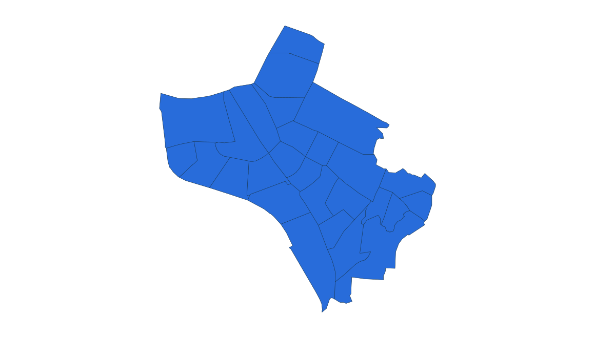
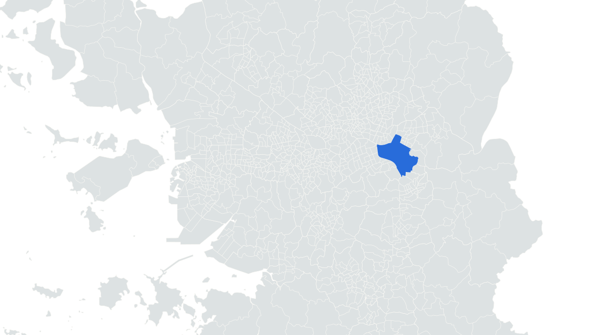

부동산 데이터 | 신혼부부가 사는 곳
2위 서울 송파구
2024.11.1 거주 기준 · 신혼부부 전체 · 단위: 쌍



석촌호수 동호 수면·벚꽃 수변 원경
실제 장소 자료사진 · 촬영 2025
사진: Striker9498 · CC0 1.0
1만 쌍을 넘는 상위 5개 구
01
???
???
02
송파구
11,752
03
덕양구
11,452
04
강서구
10,724
05
부평구
10,204
현재 소개 2위 · 서울 송파구
덕양구보다 300쌍 많음
통계: 통계청 「2024년 신혼부부통계」 수도권 구별 집계 | 지도: SGIS · vuski/admdongkor, CC BY 4.0 · 2024 경계